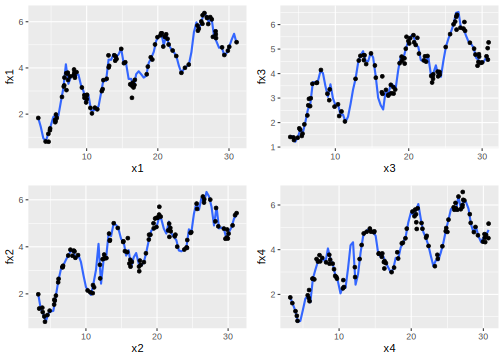
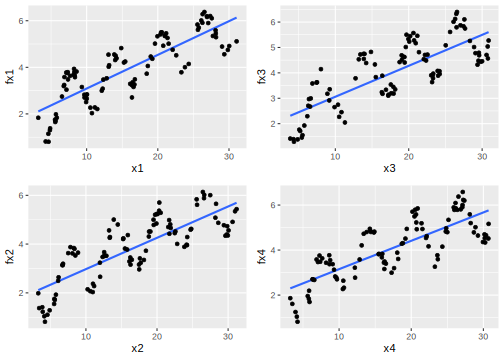

7.1 Variance-Bias Trade-Off
Assume \(\mathbf{X}\) is \(n \times p\) observation matrix and \(\mathbf{y}\) is response variable, we have:
\[\begin{equation} \mathbf{y}=f(\mathbf{X})+\symbf{\epsilon} \tag{7.1} \end{equation}\]
where \(\symbf{\epsilon}\) is the random error with a mean of zero. The function \(f(\cdot)\) is our modeling target, which represents the information in the response variable that predictors can explain. The main goal of estimating \(f(\cdot)\) is inference or prediction, or sometimes both. In general, there is a trade-off between flexibility and interpretability of the model. So data scientists need to comprehend the delicate balance between these two.
Depending on the modeling purposes, the requirement for interpretability varies. If the prediction is the only goal, then as long as the prediction is accurate enough, the interpretability is not under consideration. In this case, people can use “black box” model, such as random forest, boosting tree, neural network and so on. These models are very flexible but nearly impossible to explain. Their accuracy is usually higher on the training set, but not necessary when it predicts. It is not surprising since those models have a huge number of parameters and high flexibility that they can “memorize” the entire training data. A paper by Chiyuan Zhang et al. in 2017 pointed out that “Deep neural networks (even just two-layer net) easily fit random labels” (Zhang et al. 2017). The traditional forms of regularization, such as weight decay, dropout, and data augmentation, fail to control generalization error. It poses a conceptual challenge to statistical theory and also calls our attention when we use such black-box models.
There are two kinds of application problems: complete information problem and incomplete information problem. The complete information problem has all the information you need to know the correct response. Take the famous cat recognition, for example, all the information you need to identify a cat is in the picture. In this situation, the algorithm that penetrates the data the most wins. There are some other similar problems such as the self-driving car, chess game, facial recognition and speech recognition. But in most of the data science applications, the information is incomplete. If you want to know whether a customer is going to purchase again or not, it is unlikely to have 360-degree of the customer’s information. You may have their historical purchasing record, discounts and service received. But you don’t know if the customer sees your advertisement, or has a friend recommends competitor’s product, or encounters some unhappy purchasing experience somewhere. There could be a myriad of factors that will influence the customer’s purchase decision while what you have as data is only a small part. To make things worse, in many cases, you don’t even know what you don’t know. Deep learning doesn’t have any advantage in solving those problems. Instead, some parametric models often work better in this situation. You will comprehend this more after learning the different types of model error. Assume we have \(\hat{f}\) which is an estimator of \(f\). Then we can further get \(\symbf{\hat{y}}=\hat{f}(\mathbf{X})\). The predicted error is divided into two parts, systematic error, and random error:
\[\begin{equation} \begin{array}{ccc} E(\mathbf{y}-\hat{\mathbf{y}})^{2} & = & E[f(\mathbf{X})+ \symbf{\epsilon} - \hat{f}(\mathbf{X})]^{2}\\ & = & \underset{\text{(1)}}{\underbrace{E[f(\mathbf{X})-\hat{f}(\mathbf{X})]^{2}}}+\underset{\text{(2)}}{\underbrace{Var(\symbf{\epsilon})}} \end{array} \tag{7.2} \end{equation}\]
It is also called Mean Square Error (MSE) where (1) is the systematic error. It exists because \(\hat{f}\) usually does not entirely describe the “systematic relation” between X and y which refers to the stable relationship that exists across different samples or time. Model improvement can help reduce this kind of error; (2) is the random error which represents the part of y that cannot be explained by X. A more complex model does not reduce the error. There are three reasons for random error:
- the current sample is not representative, so the pattern in one sample set does not generalize to a broader scale.
- The information is incomplete. In other words, you don’t have all variables needed to explain the response.
- Measurement error in the variables.
Deep learning has significant success solving problems with complete information and usually low measurement error. As mentioned before, in a task like image recognition, all you need are the pixels in the pictures. So in deep learning applications, increasing the sample size can improve the model performance significantly. But it may not perform well in problems with incomplete information. The biggest problem with the black-box model is that it fits random error, i.e., over-fitting. The notable feature of random error is that it varies over different samples. So one way to determine whether overfitting happens is to reserve a part of the data as the test set and then check the performance of the trained model on the test data. Note that overfitting is a general problem from which any model could suffer. However, since black-box models usually have a large number of parameters, it is much more suspectable to over-fitting.

Types of Model Error
The systematic error \(E[f(\mathbf{X})-\hat{f}(\mathbf{X})]^{2}\) can be further decomposed as:
\[\begin{equation} \begin{array}{ccc} & & \left(f(\mathbf{X})-E[\hat{f}(\mathbf{X})]+E[\hat{f}(\mathbf{X})]-\hat{f}(\mathbf{X})\right)\\ & = & E\left(E[\hat{f}(\mathbf{X})]-f(\mathbf{X})\right)^{2}+E\left(\hat{f}(\mathbf{X})-E[\hat{f}(\mathbf{X})]\right)^{2}\\ & = & [Bias(\hat{f}(\mathbf{X}))]^{2}+Var(\hat{f}(\mathbf{X})) \end{array} \tag{7.3} \end{equation}\]
The systematic error consists of two parts, \(Bias(\hat{f}(\mathbf{X}))\) and \(Var (\hat{f}(\mathbf{X}))\). To minimize the systematic error, we need to minimize both. The bias represents the error caused by the model’s approximation of the reality, i.e., systematic relation, which may be very complex. For example, linear regression assumes a linear relationship between the predictors and the response, but rarely is there a perfect linear relationship in real life. So linear regression is more likely to have a high bias. In general, the more flexible the model is, the higher the variance. However, this does not guarantee complex models will outperform a much simpler one, such as linear regression. If the real relationship \(f\) is linear, then linear regression is unbiased. It is difficult for a more flexible model to compete. Good learning method requires low variance and bias. However, it is easy to find a model with extremely low bias but high variance (by fitting a tree) or a method with low variance but high bias (by fitting a straight line). That why we call it trade-off.
To explore bias and variance, let’s begin with a simple simulation. We will simulate a data with a non-linear relationship and fit different models on it. An intuitive way to show these is to compare the plots of various models.
The code below simulates one predictor (x) and one response variable (fx). The relationship between x and fx is non-linear. You need to load the multiplot function by running source('http://bit.ly/2KeEIg9'). The function assembles multiple plots on a canvas.
source('http://bit.ly/2KeEIg9')
# randomly simulate some non-linear samples
x = seq(1, 10, 0.01) * pi
e = rnorm(length(x), mean = 0, sd = 0.2)
fx <- sin(x) + e + sqrt(x)
dat = data.frame(x, fx)Then fit a simple linear regression on these data:
# plot fitting result
library(ggplot2)
ggplot(dat, aes(x, fx)) +
geom_point() +
geom_smooth(method = "lm", se = FALSE)## `geom_smooth()` using formula 'y ~ x'
FIGURE 7.1: High bias model
Despite a large sample size, trained linear regression cannot describe the relationship very well. In other words, in this case, the model has a high bias (Fig. 7.1). People also call it underfitting.
Since the estimated parameters will be somewhat different for different samples, there is the variance of estimates. Intuitively, it gives you some sense that if we fit the same model with different samples (presumably, they are from the same population), how much will the estimates change. Ideally, the change is trivial. For high variance models, small changes in the training data result in very different estimates. In general, a model with high flexibility also has high variance., such as the CART tree, and the initial boosting method. To overcome that problem, the Random Forest and Gradient Boosting Model aim to reduce the variance by summarizing the results obtained from different samples.
Let’s fit the above data using a smoothing method which is highly flexible and can fit the current data tightly:
ggplot(dat, aes(x, fx)) + geom_smooth(span = 0.03)
FIGURE 7.2: High variance model
The resulting plot (Fig. 7.2) indicates the smoothing method fit the data much better and it has a much smaller bias. However, this method has a high variance. If we simulate different subsets of the sample, the result curve will change significantly:
# set random seed
set.seed(2016)
# sample part of the data to fit model sample 1
idx1 = sample(1:length(x), 100)
dat1 = data.frame(x1 = x[idx1], fx1 = fx[idx1])
p1 = ggplot(dat1, aes(x1, fx1)) +
geom_smooth(span = 0.03) +
geom_point()
# sample 2
idx2 = sample(1:length(x), 100)
dat2 = data.frame(x2 = x[idx2], fx2 = fx[idx2])
p2 = ggplot(dat2, aes(x2, fx2)) +
geom_smooth(span = 0.03) +
geom_point()
# sample 3
idx3 = sample(1:length(x), 100)
dat3 = data.frame(x3 = x[idx3], fx3 = fx[idx3])
p3 = ggplot(dat3, aes(x3, fx3)) +
geom_smooth(span = 0.03) +
geom_point()
# sample 4
idx4 = sample(1:length(x), 100)
dat4 = data.frame(x4 = x[idx4], fx4 = fx[idx4])
p4 = ggplot(dat4, aes(x4, fx4)) +
geom_smooth(span = 0.03) +
geom_point()
multiplot(p1, p2, p3, p4, cols = 2)
The fitted lines (blue) change over different samples which means it has high variance. People also call it overfitting. Fitting the linear model using the same four subsets, the result barely changes:
p1 = ggplot(dat1, aes(x1, fx1)) +
geom_smooth(method = "lm", se = FALSE) +
geom_point()
p2 = ggplot(dat2, aes(x2, fx2)) +
geom_smooth(method = "lm", se = FALSE) +
geom_point()
p3 = ggplot(dat3, aes(x3, fx3)) +
geom_smooth(method = "lm", se = FALSE) +
geom_point()
p4 = ggplot(dat4, aes(x4, fx4)) +
geom_smooth(method = "lm", se = FALSE) +
geom_point()
multiplot(p1, p2, p3, p4, cols = 2)
In general, the variance (\(Var(\hat{f}(\mathbf{X}))\)) increases and the bias (\(Bias(\hat{f}(\mathbf{X}))\)) decreases as the model flexibility increases. Variance and bias together determine the systematic error. As we increase the flexibility of the model, at first the rate at which \(Bias(\hat{f}(\mathbf{X}))\) decreases is faster than \(Var (\hat{f} (\mathbf{X}))\), so the MSE decreases. However, to some degree, higher flexibility has little effect on \(Bias(\hat{f}(\mathbf{X}))\) but \(Var(\hat{f} (\mathbf{X}))\) increases significantly, so the MSE increases.